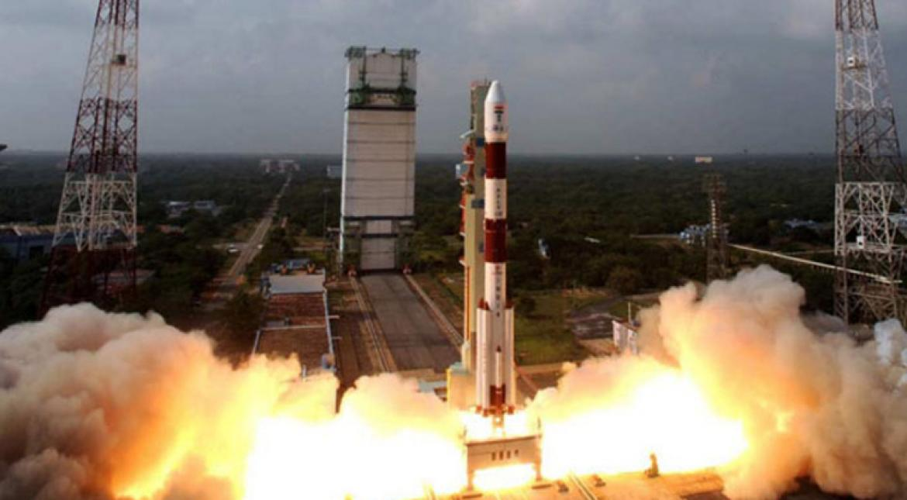
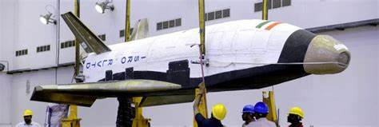

| Name | Description | Payload Capacity | Launch Date |
|---|---|---|---|
| PSLV | Polar Satellite Launch Vehicle | 1,750 kg | October 22, 1994 |
| GSLV Mk III | Geosynchronous Satellite Launch Vehicle Mark III | 4,000 kg | November 5, 2014 |
| SSLV | Small Satellite Launch Vehicle | 500 kg | Yet to be launched |
| ISRO Orbital Vehicle | Reusable Launch Vehicle | 2,000 kg | Yet to be launched |
| Chandrayaan-2 | Lunar Mission | 3,877 kg | July 22, 2019 |
The Polar Satellite Launch Vehicle (PSLV) is an expendable launch system developed by the Indian Space Research Organisation (ISRO). It is primarily used to launch satellites into a polar orbit around Earth. The PSLV has been the workhorse of the Indian space program and has successfully launched numerous satellites for various purposes.

The Geosynchronous Satellite Launch Vehicle Mark III (GSLV Mk III) is India's most powerful launch vehicle developed by the Indian Space Research Organisation (ISRO). It is designed to launch heavy communication satellites into geostationary orbit and carry out other high-profile space missions. The GSLV Mk III is also known as the "LVM3" (Launch Vehicle Mark 3).
The Small Satellite Launch Vehicle (SSLV) is a launch vehicle under development by the Indian Space Research Organisation (ISRO). It is designed to provide dedicated launch services for small satellites with a maximum payload capacity of around 500 kilograms. The SSLV aims to offer cost-effective and flexible options for launching small satellites into various orbits.
The Reusable Launch Vehicle (RLV) is a class of spacecraft designed to be used for multiple missions, reducing the cost of space exploration and satellite deployment. RLVs are built with the intention of recovering and reusing major components of the launch vehicle, such as the first stage or booster stage. The concept of reusability in launch vehicles aims to increase the efficiency and affordability of space missions.

Chandrayaan 2 is India's second lunar exploration mission after Chandrayaan 1. It was launched by the Indian Space Research Organisation (ISRO) on July 22, 2019. The primary objective of the mission is to land a lunar rover called Vikram on the Moon's surface and conduct various scientific experiments and investigations.